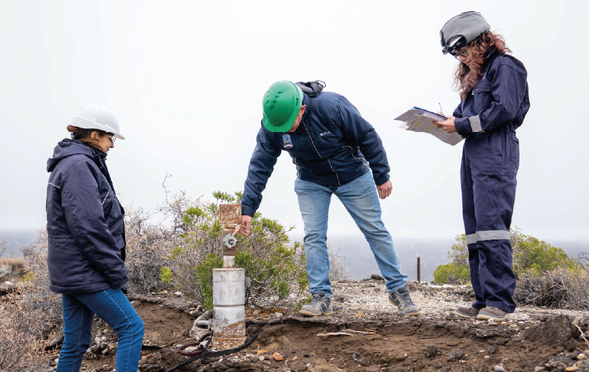
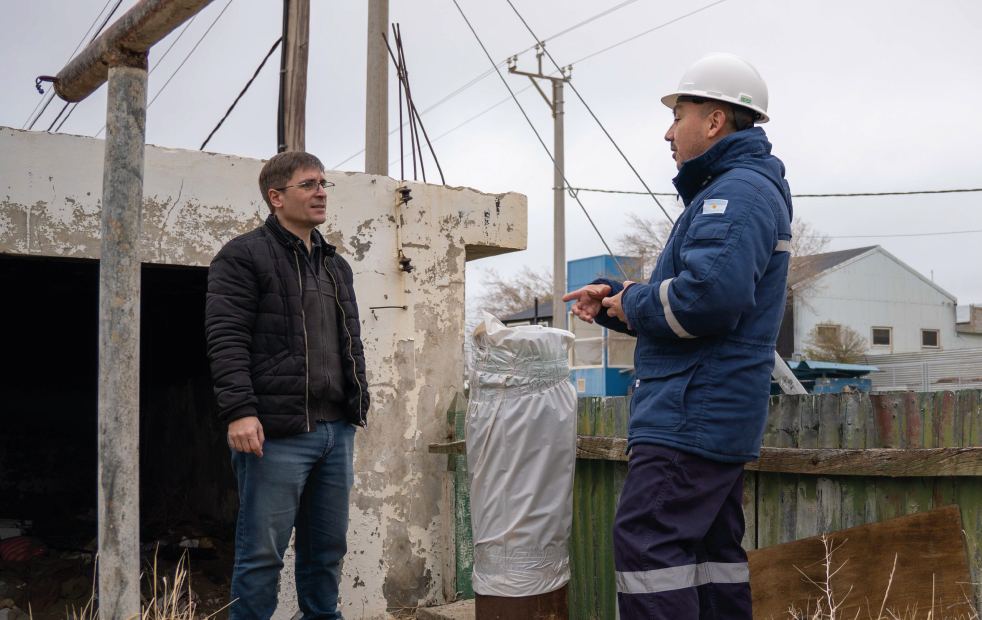

Con ese objetivo, el diputado nacional José Glinski presentó un proyecto de ley en el Congreso de la Nación que propone crear un marco normativo para identificar, gestionar y remediar los pasivos ambientales hidrocarburíferos, promoviendo al mismo tiempo una transición energética justa para las regiones donde la actividad petrolera atraviesa un proceso de transformación.
La iniciativa parte de un principio simple: el cierre de una etapa productiva no puede significar el abandono de las responsabilidades ambientales. Quienes desarrollaron la actividad deben responder por los impactos que generaron, garantizando la reparación del ambiente y la protección de las comunidades.
¿Qué propone el proyecto?
Entre sus principales objetivos se destacan:
- • Definir legalmente qué es un pasivo ambiental hidrocarburífero, estableciendo criterios claros para su identificación.
- • Determinar las responsabilidades de las empresas y demás actores involucrados en la actividad.
- • Crear un Registro Nacional de Pasivos Ambientales Hidrocarburíferos, con información pública y actualizada.
- • Constituir un Fondo Nacional para la Remediación, destinado a financiar las tareas de saneamiento ambiental.
- • Exigir garantías financieras, para asegurar que existan recursos disponibles aun cuando cambien los operadores o finalicen las concesiones.
- • Establecer mecanismos de control, monitoreo y participación, fortaleciendo la transparencia y el acceso a la información.
- • Promover una transición energética justa, articulando las tareas de remediación con la generación de empleo, la capacitación laboral y el desarrollo de nuevas actividades productivas.
¿Por qué es importante una ley?
La remediación de los pasivos ambientales no depende únicamente de la voluntad de las empresas o de decisiones aisladas. Requiere reglas claras, responsabilidades definidas y herramientas que permitan planificar las tareas de saneamiento a largo plazo.
Contar con un marco legal específico también brinda mayor previsibilidad para las comunidades, los trabajadores, el Estado y las propias empresas, estableciendo criterios comunes para el cierre de pozos, la recomposición ambiental y el seguimiento de cada sitio afectado, no sólo en la Cuenca del Golfo sino también en todo Chubut y a nivel nacional.

Una mirada hacia el futuro
La transición energética representa un desafío para las regiones petroleras, pero también una oportunidad. Las tareas de remediación ambiental demandan conocimiento técnico, inversión y mano de obra especializada. Convertir ese proceso en una política pública permite proteger el ambiente, generar empleo y acompañar el desarrollo de las comunidades que durante décadas sostuvieron la producción energética del país.
Contar con un marco legal específico también brinda mayor previsibilidad para las comunidades, los trabajadores, el Estado y las propias empresas, estableciendo criterios comunes para el cierre de pozos, la recomposición ambiental y el seguimiento de cada sitio afectado, no sólo en la Cuenca del Golfo sino también en todo Chubut y a nivel nacional.
